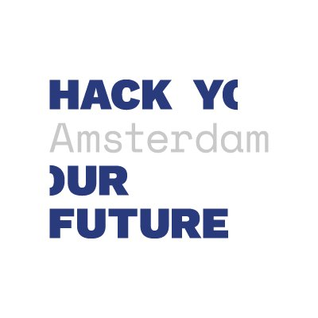

I'm Mario from Netherlands. I am living in Amsterdam.
I am really interested in computer science and programming.
I have studied the Utrecht University in Netherlands between in 2010-2014.
I am trying to be Full-Stack Web Developer.
I'm sure that You've already known about
How important is Sofware and Web World?
Web World is growing up hugely and it's helping our life to make easier and faster.
So I am taking Full-Stack Web Development course.
Beside studying University, taking software course is pretty much good to be good programmer.
Because that courses have well-skilled tutor from market. They are forcing you to be good programmer.
On the other hand I love learnig English language.
Learning language is big chalenge for me. While I am trying to speak English,
I am struggling but it's so enjoyful for me because I am getting fluent day by day.
I'm big fun of learning which is useful ang giving me excitement and inspration.
Hello, a bit about me:
Mario Jones / web developer
My Resume
Personal Info
Name : Mario Jones
Tel : +31 6 13467500
E-Mail : mario@example.com
Address : Van Noortwijklaan 5 1700 Amsterdam
Education
Utrecht University (Computer Engineering) GPA(3.13/4) (2010-2014)
Sergey Brin High School (science department ) GPA(83/100) (2005-2009)
Work Experience
Utrecht University (Internship) 2012/Summer Term
- Digital Image Processing, Filtering Imag
- Help Desk Department / Solving Computer Problems
Internet Company (Internship) 2013/Summer Term
- Fundemental Java Programming
- Designing, coding and testing of Java Applications
Web World Company (Web Developer) July 2015 – May 2016
- Investigating, fixing, and debugging software defects..
- Monitoring website and platform performance
- Proofreading and copyediting content for websites.
- Registering a website with major search engines.
Skills
Web Development Skills
- Html, Css, SQL, Java, JavaScript, PHP.
- Creating user friendly websites.
- Developing, and enhancing new systems.
- Front-End Development with CSS and HTML.
- In-depth understanding of modern web practices.
- Extensive Knowledge of databases, servers, operating systems.
Personal Skills
- Clear and effective communication skills.
- Innovative, always full of new ideas / suggestions
- Strong leadership, communication, and collaboration skills.
- Skilled in critical thinking, logic, and high math
- Good time management skills, prioritization skills.
- Superior attention to detail.
- Can work efficiently with minimum supervision.
- Ability to follow complex instructions
Projects
Web Projects :
- Student Information System(Html, Css, MySql, Php)
- Library Automation System(Html, Css, MySql, Php)
- Improve Your Web Skills(Html, Css)
- Personal Website(Html, Css)
Desktop Applications:
- High School Automation System(Java, MySql)
- Dictionary(C-File(I/O))
- Game(C-Allegro)
Web Developer Resume
Tips For Better Web Developer Resume
Web developers build, service and maintain visually appealing and
user friendly websites. They not only work across a broad
range of projects and technical disciplines, but also liaise
closely with clients to find out their exact needs, this in turn allows
them to build a site that meets a customers exact requirements.
To be an effective web developer you should be a good problem solver,
like browsing websites and have a genuine interest in the Internet.
A well written and laid our resume is vital
to getting invited to that all important interview. Below
you’ll find some useful tips on how to put together a attention grabbing one
In your resume show that you can
- Build customised websites to the highest specifications.
- Work to under pressure and to tight deadlines.
- Come up with solutions to seemingly intractable problems.
- Carry out routine site maintenance.
- Drive projects forward.
- Work closely with other developers and professionals.
- Make recommendations on the use of new and emerging technologies.
- Produce feasibility and usability reports for projects as well as accurate cost projections.
- Organize and manage multiple priorities simultaneously.
- Communicate confidently.
- Quickly fit into any existing team of developers.
- Work through a project life cycle.
Demonstrate that you have
- The communication skills required to attend client meetings.
- A disciplined and analytical approach to web development projects.
- The ability to work on your own with minimum supervision.
Show knowledge of
- Search Engine Optimisation (SEO)
- Internet Marketing
- The latest Social Media trends.
- Database management
Show that you are
- Technology savvy
- Highly motivated
- Energetic
- Creative
- Imaginative
References For Preparing Better Web Resumes
Usuful sources for better web developer CV
Hack Your Future
About Hack Your Future
Hack Your Future trains refugees to become full-stack software developers.
Our coding school teaches a 6-month web development program to refugees
with or without a background in coding. The curriculum is created and
taught by our volunteer network of over forty professional developers.
They teach our students how to work on projects in a modern tech team.
How to be problem-solvers. At HackYourFuture, students learn to think
like developers. Training refugees in computer programming significantly
boosts their chances of fulfilling, long-term employment. Plus, it fills
a gap on the job market. Everyone wins. Our approach works: 96% of our graduates
have gone on to find jobs in the tech industry.
Access more information about Hack Your Future
-  Hack Your Future Website
 Hack Your Future Twitter
Hack Your Future Twitter Hack Your Future Facebook
Hack Your Future Facebook Hack Your Future Linkedin
Hack Your Future Linkedin Hack Your Future Github
Hack Your Future Github- Hack Your Future Youtube